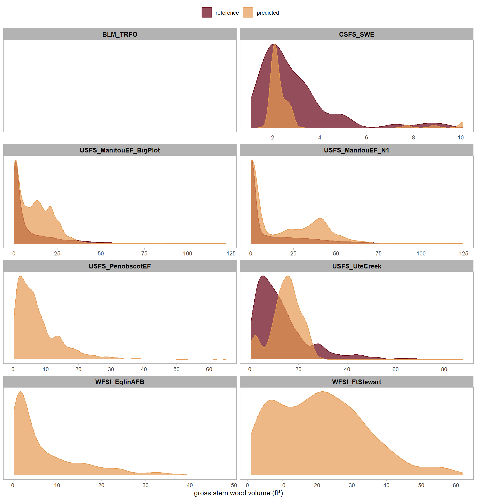
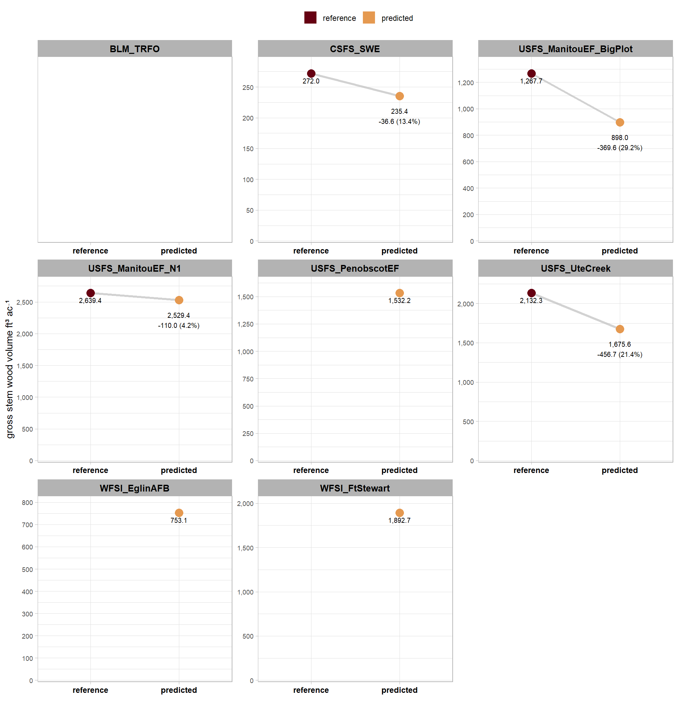
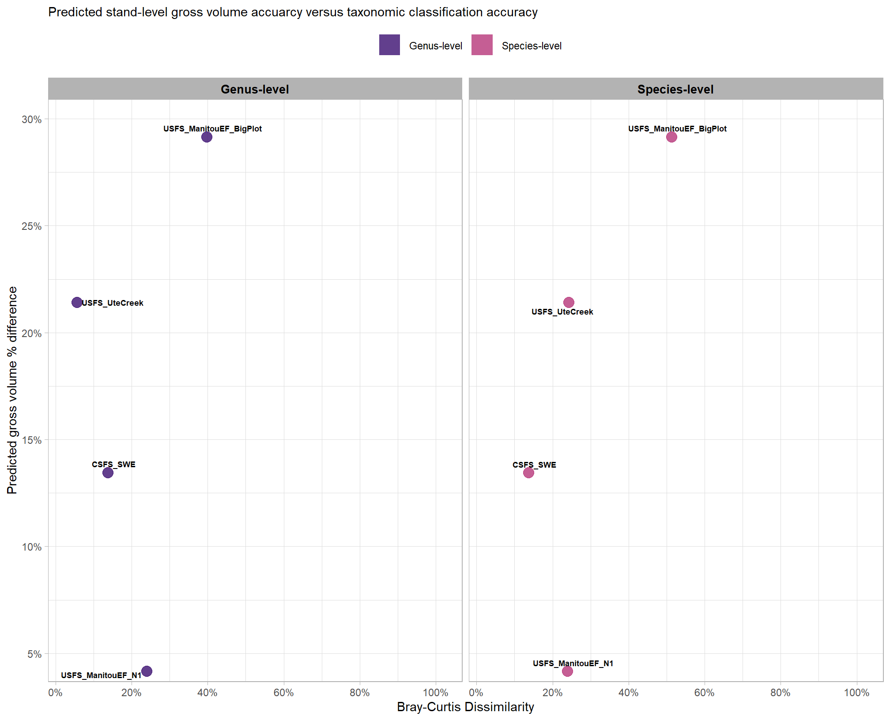

13 NSVB Volume Accuracy Summary
Earlier:
- we proposed a method to attach species/genus to individual tree forest inventories generated from aerial point cloud data using the
cloud2treesframework and - evaluated the accuracy of that taxonomic classification method
- Then, defined our on functions to implement the US National Scale Volume Biomass (NSVB) method (Westfall et al. 2024) to predict tree volume, biomass, and carbon using the foundational workflow made available by Matthew Russell at https://github.com/mbrussell/NSVB.
- this functionality we defined enables us to attach the NSVB volume and biomass calculations to any spatial tree list or a tree list with all required attributes
Now, we’ll compare the NSVB volume estimates obtained via reference field sample sample plots versus those obtained from aerial point cloud data using the cloud2trees framework with species/genus to attached to individual trees using the proposed method.
it is important to note that NSVB calculations rely on tree height values, so, not all field reference data will be usable for this comparison. we already used the trees_nsvb_biomass() function to perform all NSVB calculations on the predicted and reference data sets. The trees_nsvb_biomass() function will checks for the required column names and automatically executes (or, attempts to execute) trees_nsvb_volume_gross() and trees_nsvb_volume_sound() if the columns are missing from the input data
let’s look at the curated list of columns we get from NSVB for one of our prediction (point cloud-based) data sets
# # do it
# ref_trees_list %>% purrr::map(names)
# pred_trees_list %>% purrr::map(names)
pred_trees_list[["USFS_ManitouEF_N1"]] %>%
sf::st_drop_geometry() %>%
dplyr::select(dplyr::all_of(c(
"treeID"
, "species_symbol"
, "tree_height_m"
, "dbh_cm"
# , get_col_names_trees_nsvb_biomass()
, get_col_names_trees_nsvb_curated()
))) %>%
dplyr::glimpse()for this evaluation of tree and stand volume, we’ll use the gross cubic-foot of stem wood volume (inside bark) value calculated from NSVB which is represented by the V_tot_ib_Gross in the outputs from our trees_nsvb_*() functions (e.g. trees_nsvb_volume_gross()) and the VOLTSGRS variable in the USFS FIA database. Since the NSVB values are in imperial units (i.e. cubic feet and pounds), we’ll continue with those units and convert any area-based measurements to acres instead of hectares or square meters
here is the distribution comparison of the gross cubic-foot of stem wood volume (inside bark) value for both predicted and reference data for trees within the field-measured area which was used to spatially filter the point cloud-based forest inventory.
comp_df_temp <-
pred_trees_list %>%
purrr::compact() %>%
names() %>%
purrr::set_names() %>%
purrr::map(function(nm){
pred_trees_list[[nm]] %>%
sf::st_drop_geometry() %>%
dplyr::ungroup() %>%
dplyr::select(dplyr::any_of(c(
"plot_id", "treeID", "tree_height_m", "dbh_cm", "species_symbol", "genus"
, "V_tot_ib_Gross", "AGB_pred_red", "W_foliage_red"
))) %>%
dplyr::mutate(name = "predicted") %>%
# dplyr::summarize(
# dplyr::across(
# .cols = c(V_tot_ib_Gross, AGB_pred_red, W_foliage_red)
# , ~sum(.x,na.rm = T)
# )
# , n_trees = dplyr::n()
# )
dplyr::bind_rows(
ref_trees_list[[nm]] %>%
sf::st_drop_geometry() %>%
dplyr::ungroup() %>%
dplyr::select(dplyr::any_of(c(
"plot_id", "treeID", "tree_height_m", "dbh_cm", "species_symbol", "genus"
, "V_tot_ib_Gross", "AGB_pred_red", "W_foliage_red"
))) %>%
dplyr::mutate(name = "reference")
) %>%
dplyr::left_join(
ref_plots_list[[nm]] %>%
sf::st_drop_geometry() %>%
dplyr::select(plot_id,plot_area_m2)
, by = "plot_id"
)
}) %>%
purrr::list_rbind(names_to = "data_site_nm") %>%
dplyr::mutate(
name = factor(
name
, levels = c("reference","predicted")
, labels = c("reference","predicted")
, ordered = T
)
)
# comp_df_temp %>% dplyr::select(V_tot_ib_Gross, AGB_pred_red, W_foliage_red) %>% summary()
comp_df_temp %>%
# dplyr::glimpse()
ggplot2::ggplot(mapping = ggplot2::aes(x = V_tot_ib_Gross, color = name, fill = name)) +
ggplot2::geom_density(mapping = ggplot2::aes(y=ggplot2::after_stat(scaled)), alpha = 0.7) +
ggplot2::facet_wrap(
facets = dplyr::vars(data_site_nm)
, ncol = 2
, scales = "free"
, axes = "all_x"
) +
harrypotter::scale_fill_hp_d(option = "hermionegranger") +
harrypotter::scale_color_hp_d(option = "hermionegranger") +
ggplot2::scale_y_continuous(NULL,breaks=NULL) +
ggplot2::scale_x_continuous(labels = scales::comma, breaks=scales::breaks_extended(n=6)) +
ggplot2::labs(
color="",fill=""
, x="gross stem wood volume (ft³)"
# , subtitle = "comparison of height and DBH distributions"
) +
ggplot2::theme_light() +
ggplot2::theme(
legend.position = "top"
, strip.text = ggplot2::element_text(size = 10, color = "black", face = "bold")
, panel.grid.major.x = ggplot2::element_blank()
, panel.grid.minor.x = ggplot2::element_blank()
# , axis.text.x = ggplot2::element_blank()
)
interesting
now we’ll aggregate the individual tree volume across the entire field-measured reference area and compare the total per-acre volumes from all sampled plots across a forest stand
# comp_df_temp %>% dplyr::glimpse()
agg_comp_df_temp <-
comp_df_temp %>%
dplyr::ungroup() %>%
dplyr::group_by(data_site_nm,name) %>%
dplyr::summarise(
n_trees_non_na = sum(!is.na(V_tot_ib_Gross))
, n_trees = dplyr::n()
, V_tot_ib_Gross = sum(V_tot_ib_Gross, na.rm = T)
) %>%
dplyr::mutate(
# sites with insufficient data to get NSVB calcs
V_tot_ib_Gross = ifelse(n_trees_non_na==0, NA, V_tot_ib_Gross)
) %>%
# add area
dplyr::left_join(
comp_df_temp %>%
dplyr::distinct(data_site_nm,plot_id,plot_area_m2) %>%
dplyr::group_by(data_site_nm) %>%
dplyr::summarise(plot_area_m2 = sum(plot_area_m2))
, by = "data_site_nm"
) %>%
# gross cubic feet per acre
dplyr::mutate(
plot_area_ha = plot_area_m2/10000
, V_tot_ib_Gross_per_ac = V_tot_ib_Gross/ (plot_area_ha * 2.471)
) %>%
dplyr::select(data_site_nm,name,n_trees,V_tot_ib_Gross_per_ac) %>%
dplyr::mutate(
name = dplyr::recode_values(
name
, "predicted" ~ "pred"
, "reference" ~ "ref"
)
) %>%
tidyr::pivot_wider(
names_from = name
, values_from = -c(data_site_nm,name)
, names_glue = "{name}_{.value}"
) %>%
dplyr::mutate(
# 'diff_' columns are calculated as the predicted value minus the actual value
dplyr::across(
.cols = paste0(
"ref_"
, c("V_tot_ib_Gross_per_ac") # comp_cols # c("tree_height_m", "dbh_cm")
, recycle0 = T
)
, .fns = ~ base::get(stringr::str_replace(dplyr::cur_column(), "^ref_", "pred_")) - .x
, .names = "diff_{stringr::str_remove(.col, '^ref_')}"
)
# 'pct_diff_' columns are calculated as the actual value minus the predicted value divided by the actual value
, dplyr::across(
.cols = paste0(
"ref_"
, c("V_tot_ib_Gross_per_ac") # comp_cols # c("tree_height_m", "dbh_cm")
, recycle0 = T
)
#
, .fns = ~ (.x-base::get(stringr::str_replace(dplyr::cur_column(), "^ref_", "pred_")))/(.x + 1e-5)
, .names = "pct_diff_{stringr::str_remove(.col, '^ref_')}"
)
)
# agg_comp_df_temp %>% dplyr::glimpse()
# table it
agg_comp_df_temp %>%
dplyr::ungroup() %>%
dplyr::left_join(
project_data_df %>%
dplyr::select(data_site_nm,data_ftype_desc)
, by = "data_site_nm"
) %>%
dplyr::mutate(
site = paste0(
data_site_nm
, "<br />("
, data_ftype_desc
, ")"
)
) %>%
dplyr::select(
site, tidyselect::ends_with("V_tot_ib_Gross_per_ac")
) %>%
dplyr::mutate(
dplyr::across(
.cols = tidyselect::starts_with("pct_")
, ~scales::percent(.x,accuracy=0.1)
)
, dplyr::across(
.cols = dplyr::where(is.numeric)
, ~scales::comma(.x,accuracy=0.1)
)
) %>%
dplyr::arrange(site) %>%
kableExtra::kbl(
caption = "Proposed Tree Classification Method Accuracy Performance<br />by site"
, col.names = c(
"site"
, "reference gross volume<br/>(ft<sup>3</sup> ac<sup>-1</sup>)"
, "predicted gross volume<br/>(ft<sup>3</sup> ac<sup>-1</sup>)"
, "difference gross volume<br/>(ft<sup>3</sup> ac<sup>-1</sup>)"
, "% difference gross volume"
)
, escape = F
) %>%
kableExtra::kable_styling(font_size = 11.5, bootstrap_options = c("responsive", "condensed","striped")) %>% #
kableExtra::scroll_box(width = "100%") %>% # put a HTML kable object in a fixed-height, fixed-width or both box and make it scrollable
kableExtra::column_spec(1, bold = TRUE) %>%
kableExtra::column_spec(c(1,5), border_right = TRUE, include_thead = TRUE) | site |
reference gross volume (ft3 ac-1) |
predicted gross volume (ft3 ac-1) |
difference gross volume (ft3 ac-1) |
% difference gross volume |
|---|---|---|---|---|
|
BLM_TRFO (pinyon-juniper) |
NA | NA | NA | NA |
|
CSFS_SWE (lodgepole pine) |
272.0 | 235.4 | -36.6 | 13.4% |
|
USFS_ManitouEF_BigPlot (western mixed conifer) |
1,267.7 | 898.0 | -369.6 | 29.2% |
|
USFS_ManitouEF_N1 (ponderosa pine) |
2,639.4 | 2,529.4 | -110.0 | 4.2% |
|
USFS_PenobscotEF (northern mixed conifer) |
NA | 1,532.2 | NA | NA |
|
USFS_UteCreek (dry-mesic mixed conifer) |
2,132.3 | 1,675.6 | -456.7 | 21.4% |
|
WFSI_EglinAFB (longleaf pine) |
NA | 753.1 | NA | NA |
|
WFSI_FtStewart (southern yellow pine) |
NA | 1,892.7 | NA | NA |
let’s plot that too
agg_comp_df_temp %>%
dplyr::select(data_site_nm, tidyselect::ends_with("V_tot_ib_Gross_per_ac")) %>%
tidyr::pivot_longer(cols = c(tidyselect::starts_with("pred_"), tidyselect::starts_with("ref_"))) %>%
dplyr::mutate(
name = dplyr::recode_values(
stringr::str_extract(name, "^(pred_|ref_)")
, "ref_" ~ "reference"
, "pred_" ~ "predicted"
) %>%
ordered() %>% forcats::fct_rev()
, value_lab =
dplyr::case_when(
name=="reference" & is.na(value) ~ scales::comma(value,accuracy=0.1)
, name=="predicted" & !is.na(pct_diff_V_tot_ib_Gross_per_ac ) ~ paste0(
scales::comma(value,accuracy=0.1)
, "\n"
, ifelse(name=="predicted" & diff_V_tot_ib_Gross_per_ac>0,"+","")
, scales::comma( ifelse(name=="predicted",diff_V_tot_ib_Gross_per_ac,NA), accuracy = 0.1 )
, " ("
, scales::percent( ifelse(name=="predicted",pct_diff_V_tot_ib_Gross_per_ac,NA), accuracy = 0.1 )
, ")"
)
, T ~ scales::comma(value,accuracy=0.1)
)
) %>%
ggplot2::ggplot(
mapping = ggplot2::aes(x = name, y = value, group = data_site_nm)
) +
ggplot2::geom_line(alpha = 0.7, color = "gray", lwd = 1.1) +
ggplot2::geom_text(
mapping = ggplot2::aes(label = value_lab)
, hjust = 0.5
, vjust = 1.8
, size = 2.7
, show.legend = F
) +
ggplot2::geom_point(
mapping = ggplot2::aes(color = name)
, size = 4
) +
ggplot2::facet_wrap(
facets = dplyr::vars(data_site_nm)
, ncol = 3
, scales = "free"
, axes = "all_y"
) +
harrypotter::scale_color_hp_d(option = "hermionegranger") +
ggplot2::scale_y_continuous(
limits = c(0,NA)
, labels = scales::comma
, breaks = scales::breaks_extended(n=7)
, expand = ggplot2::expansion(mult = c(0.01,0.1))
) +
ggplot2::labs(
x = "" # "comparison"
, y = "gross stem wood volume ft³ ac⁻¹"
, color = ""
# , subtitle = "gross volume ft³ ac⁻¹"
) +
ggplot2::theme_light() +
ggplot2::theme(
legend.position = "top"
, axis.text.x = ggplot2::element_text(size = 9, face = "bold", color = "black")
, axis.text.y = ggplot2::element_text(size = 7)
, strip.text = ggplot2::element_text(size = 10, color = "black", face = "bold")
) +
ggplot2::guides(
color = ggplot2::guide_legend(
override.aes = list(shape = 15, size = 6, linetype = 0)
)
)
interesting, let’s plot the percent difference in stem wood volume per acre between the field reference data and our predicted data against the site-level accuracy of genus and species classification quantified with the Bray-Curtis dissimilarity/similarity index which compares the predicted composition against the observed field composition. for this figure, we’ll use the Bray-Curtis dissimilarity index where 0 indicates identical species compositions and 1 indicates completely non-overlapping communities. this will allow us to read the plot intuitively where points in the upper right have both high taxonomic classification and high volume prediction error while points in the lower left have both low taxonomic classification and low volume prediction error.
# add it to our data
# project_data_df %>% dplyr::glimpse()
# agg_comp_df_temp %>% dplyr::glimpse()
project_data_df <-
project_data_df %>%
dplyr::left_join(
agg_comp_df_temp %>%
dplyr::select(data_site_nm, acc_site_vol_cuft_ac_pct_diff=pct_diff_V_tot_ib_Gross_per_ac)
, by = "data_site_nm"
)# plot
# ?tidyr::pivot_longer
project_data_df %>%
dplyr::select(
data_site_nm, acc_site_vol_cuft_ac_pct_diff
, acc_site_genus_bc_dissimilarity
, acc_site_species_bc_dissimilarity
) %>%
tidyr::pivot_longer(
cols = tidyselect::ends_with("bc_dissimilarity")
) %>%
dplyr::mutate(
name = name %>%
stringr::str_extract("(_genus_|_species_)") %>%
stringr::str_remove_all("_") %>%
stringr::str_to_sentence() %>%
stringr::str_c("-level")
) %>%
# plot
ggplot2::ggplot(
mapping = ggplot2::aes(x = value, y = acc_site_vol_cuft_ac_pct_diff, color = name)
) +
ggplot2::geom_point(size = 4, alpha = 0.8) +
ggrepel::geom_text_repel(
mapping = ggplot2::aes(label = data_site_nm, fontface = "bold")
, color = "black"
, size = 2.4
) +
ggplot2::facet_grid(
cols = dplyr::vars(name)
# , rows = dplyr::vars(taxon_level)
# , switch = "y"
) +
ggplot2::scale_y_continuous(
labels = scales::label_percent(accuracy = 1)
, expand = ggplot2::expansion(mult = c(0.02,0.07))
, breaks = scales::breaks_extended(n = 7)
) +
ggplot2::scale_x_continuous(
limits = c(0,1)
, labels = scales::label_percent(accuracy = 1)
, expand = ggplot2::expansion(mult = c(0.02,0.07))
, breaks = scales::breaks_extended(n = 7)
) +
ggplot2::scale_color_viridis_d(option = "magma", begin = 0.2, end = 0.5) +
ggplot2::labs(
subtitle = "Predicted stand-level gross volume accuarcy versus taxonomic classification accuracy"
, x = "Bray-Curtis Dissimilarity" #
, y = "Predicted gross volume % difference" # "study site"
, color = "" # "study site"
) +
ggplot2::theme_light() +
ggplot2::theme(
legend.position = "top"
, strip.text = ggplot2::element_text(size = 10, color = "black", face = "bold")
) +
ggplot2::guides(
color = ggplot2::guide_legend(override.aes = list(shape = 15, lwd = NA, size = 8, fill = NA))
, fill = "none"
)
so it looks like the taxonomic classification accuracy has limited influence on differences in the predicted aggregate, stand-level volume accuracy…let’s just do a quick test using the coefficient of variation (R-squared) from a simple linear model looking at the effect of the site-level Bray-Curtis predicted species dissimilarity on predicted volume error.
lm_temp <- stats::lm(acc_site_vol_cuft_ac_pct_diff ~ acc_site_species_bc_dissimilarity, data = project_data_df)
summary(lm_temp)##
## Call:
## stats::lm(formula = acc_site_vol_cuft_ac_pct_diff ~ acc_site_species_bc_dissimilarity,
## data = project_data_df)
##
## Residuals:
## 2 11 12 14
## 0.03330 0.01171 -0.10803 0.06302
##
## Coefficients:
## Estimate Std. Error t value Pr(>|t|)
## (Intercept) 0.03583 0.10402 0.344 0.763
## acc_site_species_bc_dissimilarity 0.47591 0.32986 1.443 0.286
##
## Residual standard error: 0.09189 on 2 degrees of freedom
## (12 observations deleted due to missingness)
## Multiple R-squared: 0.51, Adjusted R-squared: 0.265
## F-statistic: 2.082 on 1 and 2 DF, p-value: 0.2859# summary(lm_temp)[["r.squared"]]
# summary(lm_temp)[["coefficients"]][2, 1] # coeff est
# summary(lm_temp)[["coefficients"]][2, 4] # p-valthe simple linear regression model of predicted stand-level gross volume error against dissimilarity in the predicted species composition shows that the Bray-Curtis dissimilarity in species explains 50.999% of the variance in stand-level gross volume error (R-squared = 0.50999). The p-value on the Bray-Curtis species-level dissimilarity of 0.286 provides evidence that there is no relationship between the accuracy of the predicted species composition and the accuracy of the predicted stand-level gross volume compared to the field reference data.